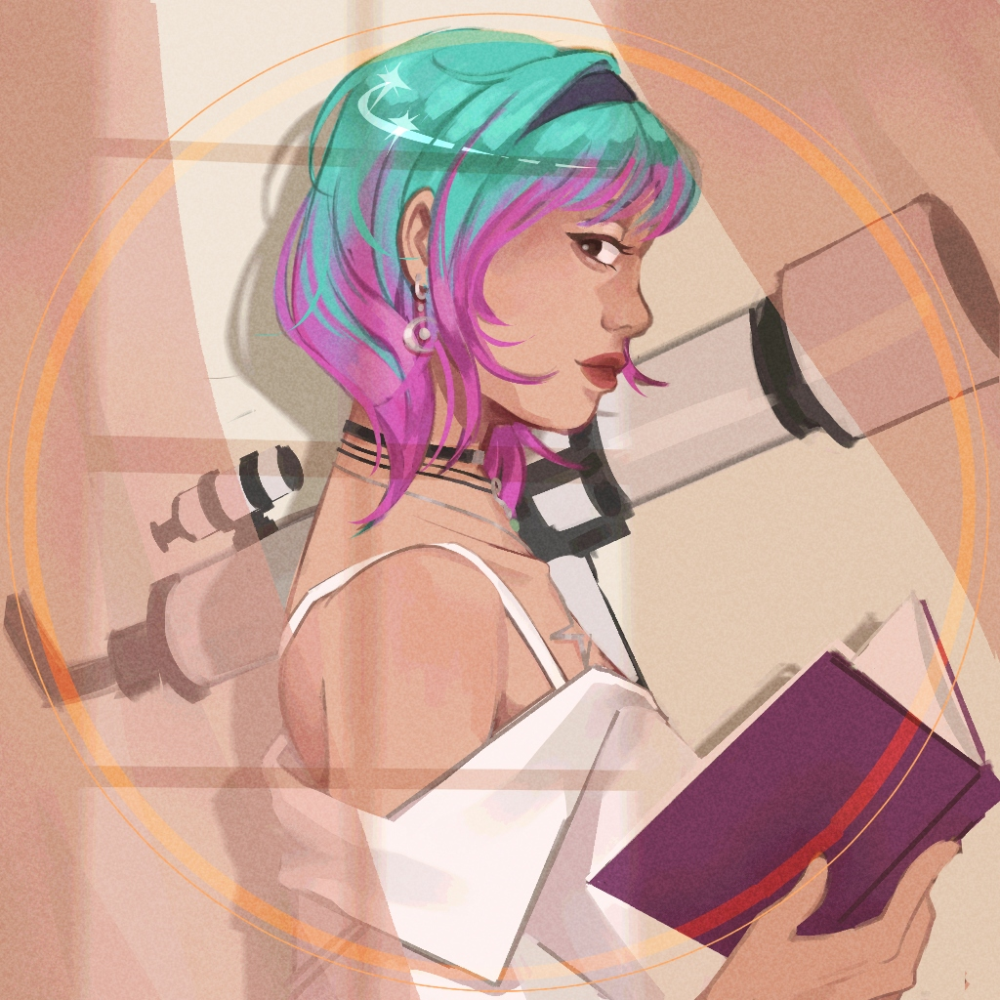
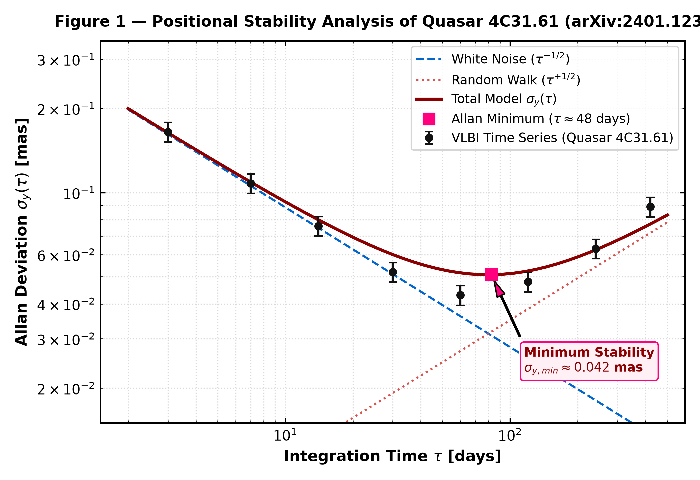

. * ° . ✦ . * ° . ★ . * ° . ✧ . * ° . ✦ . *
. ⁺ ₊ ⋆ ˚ ₊ ‧ ⁺ ₊ ⋆ . ✦ . ⋆ ⁺ ₊ ⋆ ˚ ₊ ‧ ⁺ ₊ ⋆ . ✦ . ⋆ ⁺ ₊ ⋆ ˚ ₊ ‧ ⁺ ₊ ⋆ .
★ . * ° . ✧ . * ° . ✦ . * ° . ★ . * ° . ✧ . *
⋆.ೃ࿔*:･ . * . ✦ . * . ★ . * . ✧ . * . ⋆.ೃ࿔*:･

System info
User Jessica Syafaq Muthmaina
Focus astrophysics and cosmology
Host M.Sc. UNIPD (Padova, Italy)
Base B.Sc. UGM (Yogyakarta, Indonesia)
Welcome to my personal digital space! I am Jessica Syafaq Muthmaina, an astrophysicist and researcher currently pursuing my Master of Science (M.Sc.) in Astrophysics and Cosmology at Universita degli Studi di Padova (UNIPD), Padova, Italy.
I previously earned my Bachelor of Science (B.Sc.) in Physics from Universitas Gadjah Mada (UGM) in Yogyakarta, Indonesia, concentrating on theoretical, computational physics, and observational astronomy.
My scientific research focuses on observational astrophysics, quasars, active galactic nuclei (AGN), positional stability analysis using VLBI time series, and frequency stability metrics via Allan standard deviation.
I love my computer! I use it for astronomical data processing, reduction, spectral analysis, LaTeX scientific typesetting, and Zettelkasten research synthesis in Obsidian.
Beyond physics, I am deeply engaged in community building, open knowledge sharing, and intersectional advocacy with Sadar Setara and Ruang Postulat in Garut, Indonesia.
Implementation of Allan Standard Deviation Technique in Stability Analysis of Quasar 4C31.61
Journal of Physics Conference Series | arXiv:2401.12325 | IOPScience DOI: 10.1088/1742-6596/2773/1/012007

Quasar 4C31.61 (2201+315) is an essential celestial reference source in the International Celestial Reference Frame (ICRF). To evaluate its long-term positional stability and suitability as a celestial grid anchor, we analyze multi-year Very Long Baseline Interferometry (VLBI) time series using the Allan standard deviation ($\sigma_y(\tau)$) method.
Allan Variance Formulation
This time-domain stability technique enables the distinction between high-frequency white noise processes (attributable to atmospheric turbulence and instrumental effects) and low-frequency random walk drifts induced by astrophysical source structure variations and core-jet interaction at microarcsecond scales.

Jessica Syafaq Muthmaina
Astrophysics and Cosmology M.Sc. Candidate | Padova, Italy
Education
M.Sc. Astrophysics and Cosmology
Universita degli Studi di Padova (UNIPD)
High Energy Instrumentation Lab Grade - 28/30
B.Sc. Physics
Universitas Gadjah Mada (UGM), Indonesia
Theoretical and Computational Physics concentration
Academic Publications
Positional Stability Analysis of Quasar 4C31.61 Using VLBI Time Series and Allan Standard Deviation
Journal of Physics - Conference Series
Selected Achievements
- Traineeship Candidate - IRAM Grenoble, Superconducting Devices Group
- Creator - Observationally Speaking YouTube channel
- Lead Advocacy - Sadar Setara and Ruang Postulat community campaign
🔗 DOI 10.1088/1742-6596/2773/1/012007
Bachelor thesis: Implementation of Allan Standard Deviation Technique in Variability Analysis of 4C31.61 Quasar. 🔗 Link to Publication
Dipartimento di Fisica e Astronomia "Galileo Galilei", Università degli Studi di Padova
stefano.ciroi@unipd.it
National Research and Innovation Agency (BRIN), Research Center for Computing
ibnu.nurul.huda@brin.go.id
Core Values & Scientific Vision
Jessica Syafaq Muthmaina | Observational Astrophysics
1. Scientific Rigor & Empirical Curiosity
A commitment to thorough observational data analysis, precise error quantification using methods like Allan variance, and seeking empirical truth in cosmic structures.
2. Open Science & Knowledge Sharing
Belief in accessible research, open-source computational tools, and communicating complex astronomical discoveries engagingly to public audiences.
3. Intersectional Community & Advocacy
Fostering inclusive academic spaces and active grassroots community advocacy through Sadar Setara and Ruang Postulat.
4. Global Collaboration & Cultural Exchange
Bridging academic perspectives between Indonesia and Europe, connecting UGM, UNIPD, and international research facilities.

- 1. Ninajirachi - Fuck My Computer 3:24
- 2. Ninajirachi - Start Button 2:58
- 3. Ninajirachi - Info Superhighway 3:45
- 4. Ninajirachi - Cyber Dream 4:12
- 5. Ninajirachi - Y2K System Shock 3:15
- 6. Ninajirachi - Binary Hearts 3:50